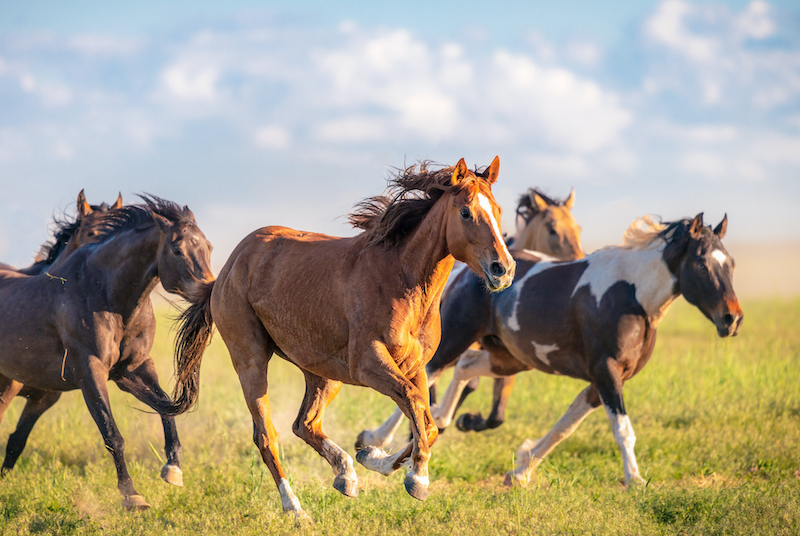
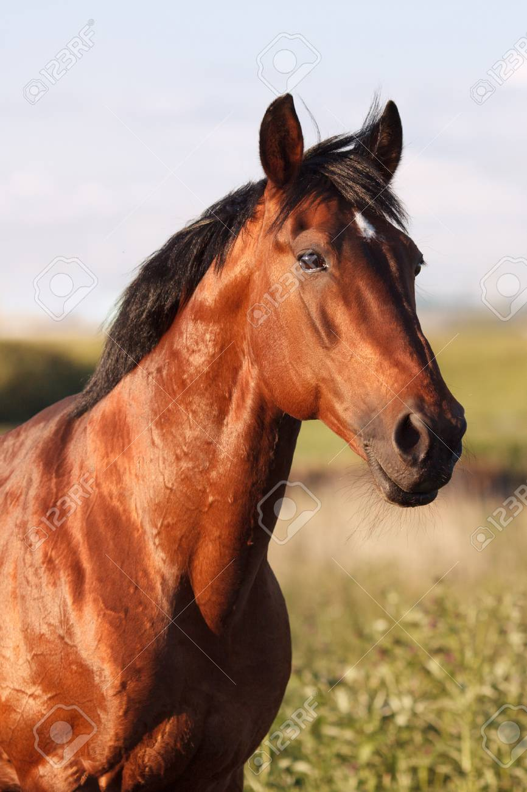

Ejemplo de Maquetación con GRID
by David esteban para Diseño WEB
Inicio
Galeria
Producto
Clientes
Sobre Nosotros
Contacto

Fotos de caballos grande

Directamente a tu cocina
Directamente a tu cocina
Directamente a tu cocina
Directamente a tu cocina